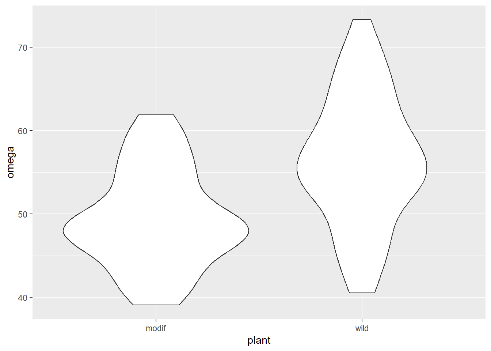

Chapter 1 What are linear models
1.1 Introduction
- what is meant by a linear model
- revise regression
- revise t.tests
- doing t.tests as linear models
- linking output of t.test to lm
- revise one way ANOVA
- linking output of aov to lm
- revise two way ANOVA
- doing two way ANOVA as linear models
- linking output of aov to lm
- extensible - ancova design
1.2 What is a linear model?
A linear model describes a continuous response variable as a function of one or more explanatory variables. When you have a single explanatory variable, that model is:
\[\begin{equation} y_{i}=\beta_{0}+\beta_{1}X1_{i}+e_{i} \tag{1.1} \end{equation}\]
Where:
- The response variable is \(y\) and \(X1\) is the explanatory variable.
- \(\beta_{0}\) and \(\beta_{1}\) are the coefficients in the model. In a single linear regression, \(\beta_{0}\) is often called the intercept and \(\beta_{1}\) the slope.
- \(i\) is the index of the response so \(y_{i}\) is the \(i\)th response; if you had 20 pairs of \(x\)-\(y\) values, \(i\) would go from 1 to 20.
- \(e_{i}\) is the “error” also known as the residual.
The equation means the response can be predicted from a given value of the explanatory variable, \(\beta_{0}\) and \(\beta_{1}\) and will take that value plus some random noise. When you build a linear model from your data the procedure estimates the model coefficients.
See figure 1.1.

Figure 1.1: Terms used in linear models.
keypoint terminology build fit parameter, coefficient estimates
If you have more than one explanatory variable this these are given as \(X2\), \(X3\) and so on up to the \(p\)th explanatory variable each with its own \(\beta\) coefficient. The general form of the model is: \[\begin{equation} y_{i}=\beta_{0}+\beta_{1}X1_{i}+\beta_{2}X2_{i}+...+\beta_{p}XP_{i}+e_{i} \tag{1.2} \end{equation}\]
1.3 Single linear regression
1.3.1 Introduction to the example
This is a test you have probably carried out before.
The concentration of juvenile hormone in stag beetles (Lucanus cervus) is known to influence mandible growth. Groups of stag beetles were injected with different concentrations of juvenile hormone (pg\(\mu\)l-1) and their average mandible size (mm) determined. The data are in stag.txt.
We will import the data with the read_table2() function from the readr package and plot it with ggplot() from the ggplot2 package. Both packages are part of the tidyverse and we load this first:
Juvenile hormone is has been set by the experimenter and mandible size has decimal places and is something we would expect to be normally distributed. Visualising our data before any further analysis is usually sensible. In this case, it will help us determine if any relationship between the two variables is linear.
 The relationship between them looks roughly linear. So far, common sense suggests the assumptions of regression are met.
The relationship between them looks roughly linear. So far, common sense suggests the assumptions of regression are met.
1.3.2 Applying and interpreting lm()
The lm() function is used to build the regression model
This can be read as: fit a linear of model of mandible size explained by juvenile growth hormone concentration.
Printing mod to the console will reveal the estimated model parameters (coefficients) but little else:
mod
#
# Call:
# lm(formula = mand ~ jh, data = stag)
#
# Coefficients:
# (Intercept) jh
# 0.41934 0.00646\(\beta_{0}\) is labelled “(Intercept)” and \(\beta_{1}\) is labelled “jh”. Thus the equation of the line is:
\(mand\) = 0.419 + 0.006\(jh\)
More information including statistical tests of the model and its parameters is obtained by using summary()
# examine it
summary(mod)
#
# Call:
# lm(formula = mand ~ jh, data = stag)
#
# Residuals:
# Min 1Q Median 3Q Max
# -0.3860 -0.2028 -0.0975 0.1503 0.6069
#
# Coefficients:
# Estimate Std. Error t value Pr(>|t|)
# (Intercept) 0.41934 0.13943 3.01 0.0094 **
# jh 0.00646 0.00158 4.08 0.0011 **
# ---
# Signif. codes: 0 '***' 0.001 '**' 0.01 '*' 0.05 '.' 0.1 ' ' 1
#
# Residual standard error: 0.292 on 14 degrees of freedom
# Multiple R-squared: 0.543, Adjusted R-squared: 0.51
# F-statistic: 16.6 on 1 and 14 DF, p-value: 0.00113The “Coefficients:” table gives the estimated \(\beta_{0}\) and \(\beta_{1}\) again, this time with their standard errors and tests of whether the estimates differ from zero. The estimated value for the intercept is 0.419 \(\pm\) 0.139 and this differs significantly from zero (\(p\) = 0.009). The estimated value for the slope, 0.006 \(\pm\) 0.002, also differs significantly from zero (\(p\) = 0.001).
The three lines at the bottom of the output gives information about the fit of the model to the data. The “Multiple R-squared” gives the proportion of the variance in the response which is explained by the model. In our case, 0.543 of the variance in mandible length is explained by the model and this is a significant proportion of that variance (\(p\) = 0.001).
For a single linear regression, the p-value for the model and the p-value for the slope are the same. This is also true for linear models in the form of a two-sample t-test but not the case for other linear models.
1.3.3 Getting predictions from the model
The predict() returns the predicted values of the response. To add a column of predicted values to the dataframe:
This requires creating a data frame of the x values from which you want to predict
Note that the name and type of value of explanatory variable must be the same as it is in the model
Replacing the terms shown in Figure 1.1 with the values in this example gives us 1.2.
Figure 1.2: these model estimates.
1.3.4 Checking assumptions
plot(mod, which = 2)
plot(mod, which = 1)
shapiro.test(mod$res)
#
# Shapiro-Wilk normality test
#
# data: mod$res
# W = 0.9, p-value = 0.4

1.3.5 Creating a figure
ggplot(data = stag, aes(x = jh, y = mand)) +
geom_point() +
scale_x_continuous(expand = c(0.01, 0),
limits = c(0, 160),
name = expression(paste("Juvenile hormone (pg",
mu,
l^-1,
")"))) +
scale_y_continuous(expand = c(0, 0),
limits = c(0, 2),
name = "Mandible length (mm)") +
geom_smooth(method = lm, se = FALSE, colour = "black") +
theme_classic()1.3.6 Reporting the results
There was a significant positive relationship between the concentration of Juvenile hormone and mandible length (\(\beta_{1}\pm s.e.\): 0.006 \(\pm\) 0.002; \(p\) = 0.001). See figure 1.3.
Figure 1.3: Relationship between the concentration of Juvenile hormone and mandible length.
1.4 t-tests
1.4.1 Introduction to the example
Some plant biotechnologists developed a genetically modified line of Cannabis sativa to increase its omega 3 fatty acids content. They grew 50 wild type and fifty modified plants to maturity, collect the seeds and measure the amount of omega 3 fatty acids. The data are in csativa.txt. They used a two-sample t-test to compare the mean omega 3 content in the two plant types.
We again use the read_table2() function to import the data and visualise it with ggplot()
 The modified plant have a lower mean omega 3 content than the wildtype plants. The modification appears not to be successful.
Statistical comparison of the two means can be done with either the t.test() or lm() functions; these are exactly equivalent but present the results differently. We will use our understanding of applying and interpreting t.test() to develop our understanding of lm() output
1.4.2 t.test() output reminder
t.test(data = csativa, omega ~ plant, var.equal = TRUE)
#
# Two Sample t-test
#
# data: omega by plant
# t = -5, df = 98, p-value = 2e-06
# alternative hypothesis: true difference in means is not equal to 0
# 95 percent confidence interval:
# -9.69 -4.21
# sample estimates:
# mean in group modif mean in group wild
# 49.5 56.4The two groups means are give in the section labelled “sample estimates” and the test of whether they differ significantly is given in the forth line (beginning “t = …”). We conclude the mean omega 3 content of the modified plants (49.465) is significantly lower than that of the wildtype plants (\(t\) = 5.029, \(d.f.\) = 98, \(p\) = 2.23110^{-6}).
The confidence interval is on the difference between the two means.
The sign on the \(t\) value and the order in which the sample estimates are given is determined by R’s alphabetical ordering of the groups. As “modif” comes before “wildtype” in the alphabet, “modif” is the first group and the test is the modified plant mean minus the wildtype mean. This has no impact on our conclusions and had the wildtype plants been labelled “control” the output would be:
Two Sample t-test
data: omega by plant
t = 5.0289, df = 98, p-value = 2.231e-06
alternative hypothesis: true difference in means is not equal to 0
95 percent confidence interval:
4.205372 9.687828
sample estimates:
mean in group control mean in group modif
56.4118 49.4652
1.4.3 Applying and interpreting lm()
The lm() function is used as follows:
This can be read as: fit a linear of model of omega content explained by plant type. Printing mod to the console gives us these estimated model parameters (coefficients):
mod
#
# Call:
# lm(formula = omega ~ plant, data = csativa)
#
# Coefficients:
# (Intercept) plantwild
# 49.47 6.95summary(mod)
#
# Call:
# lm(formula = omega ~ plant, data = csativa)
#
# Residuals:
# Min 1Q Median 3Q Max
# -15.872 -3.703 -0.964 4.460 16.918
#
# Coefficients:
# Estimate Std. Error t value Pr(>|t|)
# (Intercept) 49.465 0.977 50.64 < 2e-16 ***
# plantwild 6.947 1.381 5.03 2.2e-06 ***
# ---
# Signif. codes: 0 '***' 0.001 '**' 0.01 '*' 0.05 '.' 0.1 ' ' 1
#
# Residual standard error: 6.91 on 98 degrees of freedom
# Multiple R-squared: 0.205, Adjusted R-squared: 0.197
# F-statistic: 25.3 on 1 and 98 DF, p-value: 2.23e-06
anova(mod)
# Analysis of Variance Table
#
# Response: omega
# Df Sum Sq Mean Sq F value Pr(>F)
# plant 1 1206 1206 25.3 2.2e-06 ***
# Residuals 98 4675 48
# ---
# Signif. codes: 0 '***' 0.001 '**' 0.01 '*' 0.05 '.' 0.1 ' ' 11.4.4 Getting predictions from the model
Replacing the terms shown in Figure 1.1 with the values in this example gives us 1.4.
Figure 1.4: these model estimates.
1.4.5 Checking assumptions
plot(mod, which = 2)
plot(mod, which = 1)
shapiro.test(mod$res)
#
# Shapiro-Wilk normality test
#
# data: mod$res
# W = 1, p-value = 0.5

1.4.6 Creating a figure
csativa_summary <- csativa %>%
group_by(plant) %>%
summarise(mean = mean(omega),
std = sd(omega),
n = length(omega),
se = std/sqrt(n))#summarise the data
ggplot() +
geom_jitter(data = csativa,
aes(x = plant, y = omega),
width = 0.25, colour = "grey") +
geom_errorbar(data = csativa_summary,
aes(x = plant,
ymin = mean,
ymax = mean),
width = .3) +
geom_errorbar(data = csativa_summary,
aes(x = plant,
ymin = mean - se,
ymax = mean + se),
width = .5) +
geom_segment(aes(x = 1, y = 75, xend = 2, yend = 75),
size = 1) +
geom_segment(aes(x = 1, y = 75, xend = 1, yend = 73),
size = 1) +
geom_segment(aes(x = 2, y = 75, xend = 2, yend = 73),
size = 1) +
annotate("text", x = 1.5, y = 77, label = "***", size = 6) +
xlab("Plant type") +
ylab("Amount of Omega 3 (units)") +
ylim(0, 90) +
scale_x_discrete(labels = c("Modified", "Wild Type")) +
theme_classic()1.4.7 Reporting the results
The genetic modification was unsuccessful with wild type plants (\(\bar{x} \pm s.e.\): 56.412 \(\pm\) 1.11) have significantly higher omega 3 than modified plants(49.465 \(\pm\) 0.823) (\(t\) = 5.029; \(d.f.\) = 98; \(p\) < 0.001). See figure 1.5.
Figure 1.5: Relationship between the concentration of Juvenile hormone and mandible length.
1.5 One-way ANOVA
1.5.1 aov()
1.5.2 lm()
1.5.3 link between the outputs
1.5.4 post-hoc for lm()
1.5.5 reporting from lm()
including a figure
1.6 Two-way ANOVA
1.6.1 aov()
1.6.2 lm()
1.6.3 link between the outputs
1.6.4 post-hoc for lm()
1.6.5 reporting from lm()
including a figure